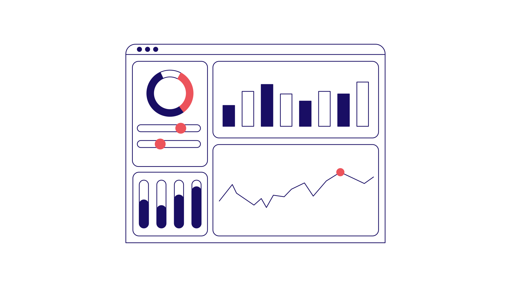
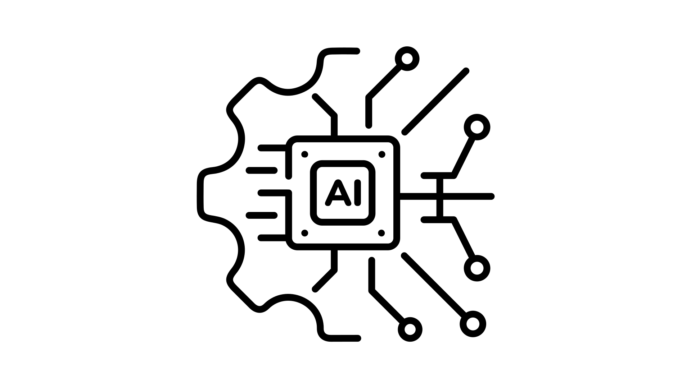

Dashboards
Aus Daten werden Entscheidungen.
Im Gesundheitswesen fehlt es selten an Daten — sondern am rechtzeitigen Überblick. Dashboards führen Informationen aus Praxisverwaltung, Terminplanung und Abrechnung in einer klaren Ansicht zusammen. So sehen Sie auf einen Blick, was gerade zählt: Auslastung, Wartezeiten und offene Abrechnungen.
Typische Anwendungen: Praxisauslastung in Echtzeit, Auswertung von Terminen und Wartezeiten, Übersicht über offene Abrechnungen.

KI-Integration
Nutzen Sie KI dort, wo sie Ihnen wirklich Arbeit abnimmt — sicher und ohne dass Ihre Daten Ihr System verlassen. Auf Wunsch vollständig lokal und offline: Sensible Patientendaten bleiben in Ihrer Praxis. DSGVO-konform von Grund auf.

KI-Agenten & Automatisierungen
Wiederkehrende Aufgaben laufen automatisch — von der Terminerinnerung bis zur Dokumentenablage. Sie gewinnen Zeit zurück für das, worauf es ankommt: Ihre Patienten.

Individuelle Software
Software, die genau Ihr Problem löst und sich in Ihren Ablauf einfügt — nicht umgekehrt. Maßgeschneidert für Ihre Praxis oder Ihr Unternehmen.
Über mich
Hinter Palinova.ai stehe ich: Patrick Linke, Medizinstudent kurz vor dem Abschluss und Entwickler mit Erfahrung in Python, Datenbanken und KI. Ich kenne den Praxisalltag aus eigener Erfahrung — und weiß, wo Technik im Gesundheitswesen wirklich hilft und wo sie nur stört. Genau an dieser Schnittstelle arbeite ich: praxisnah, verständlich und datenschutzkonform.
Kontakt
Lassen Sie uns sprechen. Schreiben Sie mir eine E-Mail — ich melde mich zeitnah bei Ihnen.
E-Mail: patrick@palinova.ai